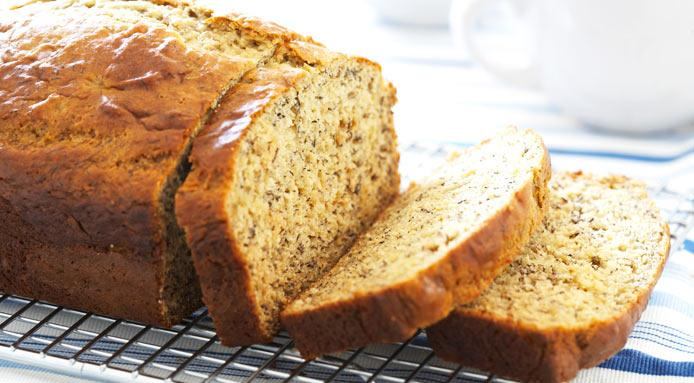

Banana Bread

Ingredients
- 125 g butter, softened
- 220 g brown sugar
- 1 tsp vanilla extract
- 2 eggs
- 400 g mashed bananas
- 250 g flour
- 1 tsp baking powder
- 1/4 tsp salt
- chopped nuts or dried fruit (optional and quantity to suit)
Steps:
- Combine the butter, sugar, vanilla extract with an electric mixer until slightly paler.
- Beat in the eggs, then the mashed banana.
- In a separate bowl, combine the remainder of the ingredients, then add to mixture.
- Spoon mixture into 12 cm x 25 cm loaf pan and bake in preheated oven at 160 degrees C for 1 hour.
Back to the main page